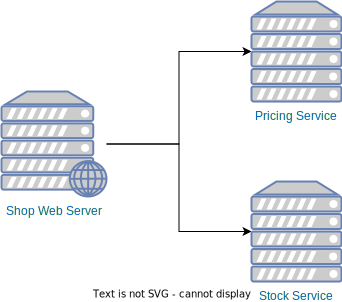

Extrospective OSPOs
Making OSS ecosystems sustainable
Outline
- State of Open Source
- OSPO: Lessons learned
- Why does it matter?
State of Open Source
Open Source Software: Open-source software is released under a license in which the copyright holder grants users the rights to use, study, change, and distribute the software and its source code to anyone and for any purpose.
But it's healthy, right?
We are creating new Open Source Projects every day.
Is that a yes?
But the pool of developer maintaining them is not growing accordingly.
What's happening?
We see:
- Existing maintainers burned out
- Projects changing license
- Lots of 1-developer-projects
Why should you care?
Well... You use Open Source everyday at work. Your software depends on it, heavily!
Given this…
Would you consider it a risk if one of these modules was maintained by your developers in their free time?
Why are we accepting it
when it comes to
open source?
OSPOs to the rescue!
What is an Open Source Program Office?
Group of people in a company to guarantee and promote the usage of Open Source.
- Policies around consuming and creating OSS
- Promote adoption of own OSS
- Governance
- Code production
Meet Aiven's OSPO


And more to come…
Apache Kafka, Apache Flink, Apache Cassandra, PostgreSQL and OpenSearch are trademarks of their respective owners.Mission
Ensure the sustainability and secure the future of the Open Source Software infrastructure Aiven relies on.
Working towards ensuring
- Critical infrastructure actively maintained
- Projects not depending on a single company, organization or individual
- Diversity of opinions
- Relieve workload of current maintainers
Some Aiven's OSPO facts
- Around 15 people
- A chapter for each technology
- Distributed
- Growing phase - Hiring!
- 1.5 years old!
Lessons learned
If we would have known this when we started…!
Developer type
1. Focus
Forget about quick turnarounds.
Code, release, observe, fix, release.
2. Awareness
Can understand community needs.
3. Autonomy
Self driven.
Developers should know how to prioritize their work.
4. Resiliency
Lots of proposed changes will be rejected, and not always because of technical reasons.
Getting talent
Creating a team
Team composition is crucial!
Having existing community members speeds up onboarding newcomers.
Pool
Pool is smaller than you think.
How many committers are there?
Around the globe
You'll need to hire talent where they are!
Hello multiple time zones!
Growing talent
Programs to promote OSS contributions internally.
Plankton Program — OSS Contribution = €
Management style
Managers should be:
- Resourceful, areas of impact are limited
- Coach, enabler from the side line
Measuring success
A proposal
- Number of issues worked on
- Number of patches reviewed
- Community engagement (blog posts,
mailing list, talks, bug reports…)
Why does it matter?
More than $$$
Monetary donations solve massive problems
in OSS projects.
Maintenance burden is reduced only
with more people.
Scalable solution
More extrospective OSPOs = More OSS developer mass
More secure
It's not only about preventing incidents, it's about being able to react fast.
Every company should have one?
NO!
Every company who could afford it should have one extrospective OSPO.
Let's build shared OSS projects, together!
Further information
Thanks!
Josep Prat — @jlprat — #extrospectiveOSPO